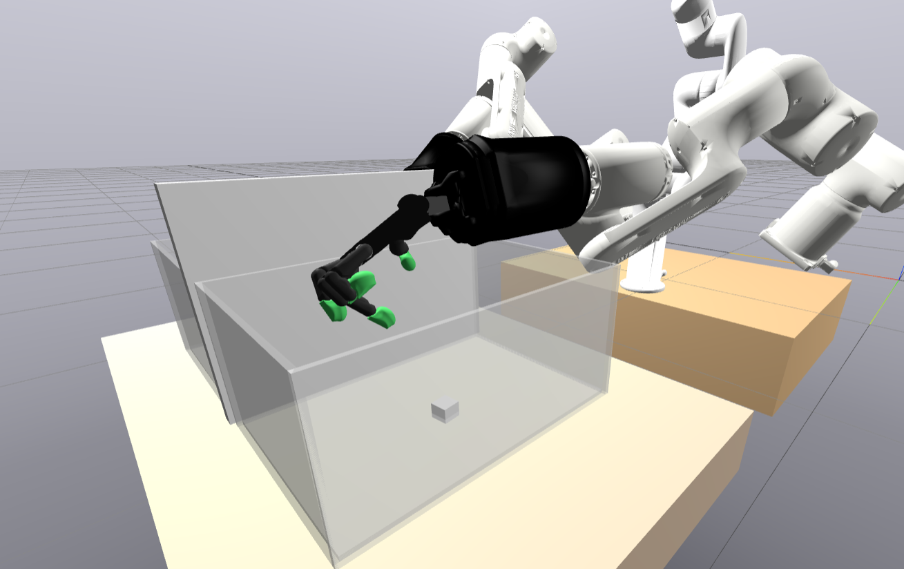
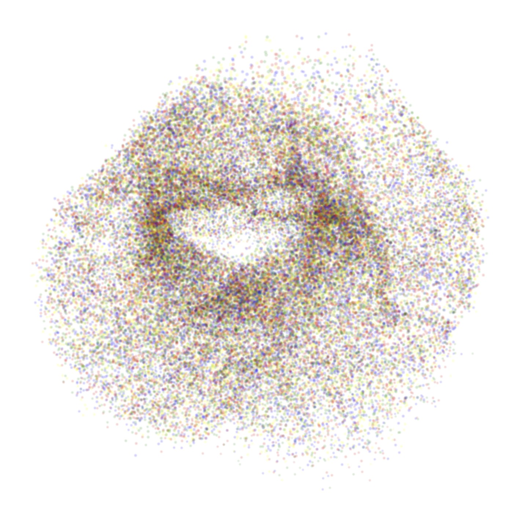
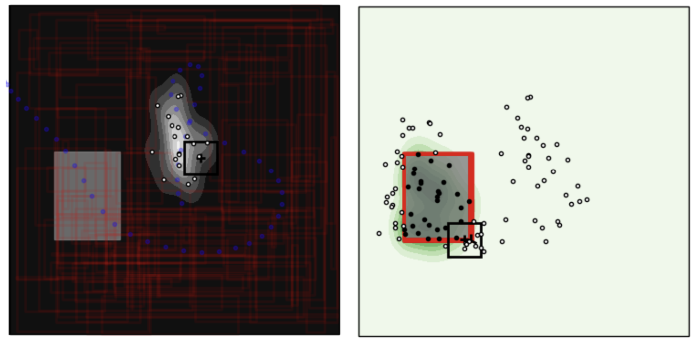
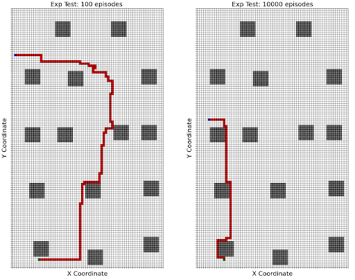
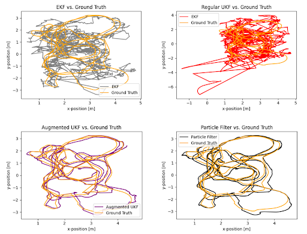
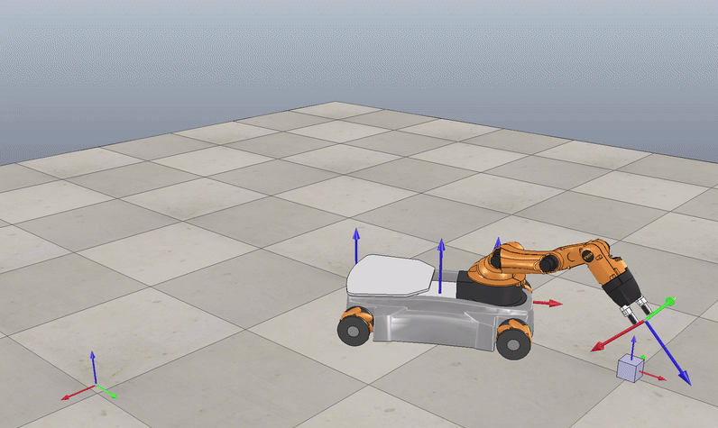
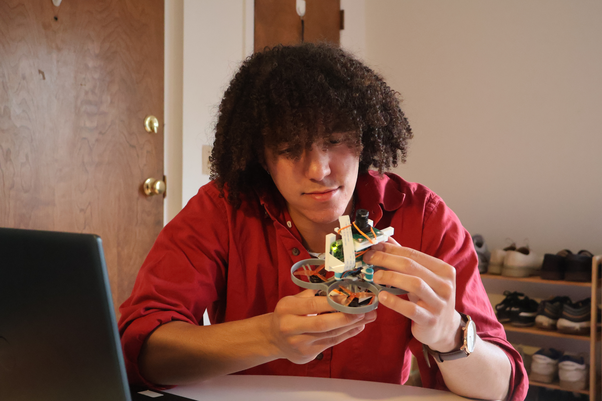
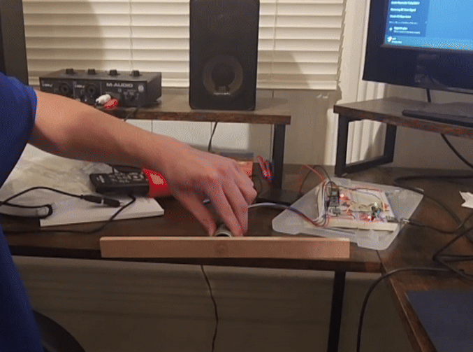
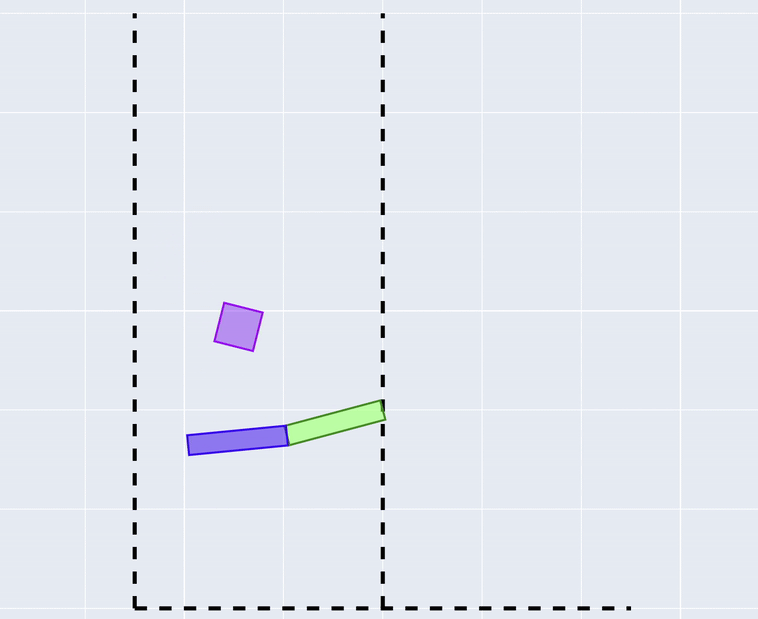
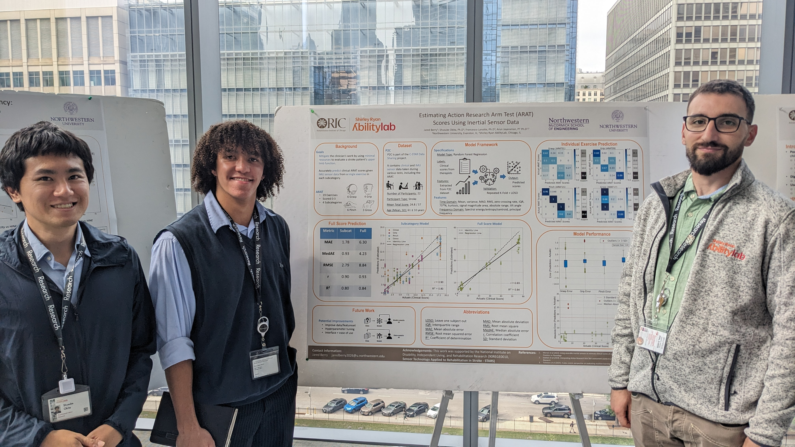

Experiments in making robots smarter.
A growing collection of work across learning, estimation, manipulation, dynamics, and control.

Reinforcement Learning for Autonomous Dexterous Manipulation
State-of-the-art reinforcement learning techniques to improve sim-to-real transfer of autonomous dexterous manipulation skills.
Open project ->
Embed to Control
Implementation of a locally linear latent dynamics model for control from raw images.
Open project ->
Ergodic Control in Exploration
An active learning agent using ergodic control and iLQR to find a hidden box.
Open project ->
Deep RL from Scratch
Custom neural networks, Gymnasium, A2C, and tabular Q-Learning implementations.
Open project ->
Filtering and State Estimation
Bayesian filtering algorithms including EKF, UKF, and particle filter implementations.
Open project ->
Pick-and-Place Mobile Manipulation
Mobile manipulation tasks with a KUKA youBot, feedforward and PI control, and trajectory planning.
Open project ->
Autonomous Quadrotor Control
Manual and autonomous quadrotor control using PID control and computer vision.
Open project ->
PID Motor Controller and Client
A robust PID motor controller in C on the PIC32MX270F256B with a Python client.
Open project ->
Simulated Soccer Juggling
A physically reasonable representation of soccer juggling with Lagrangian dynamics and feedback control.
Open project ->
ICORR 2025 Paper
A machine learning model estimating upper limb function in stroke patients from IMU data.
Open project ->